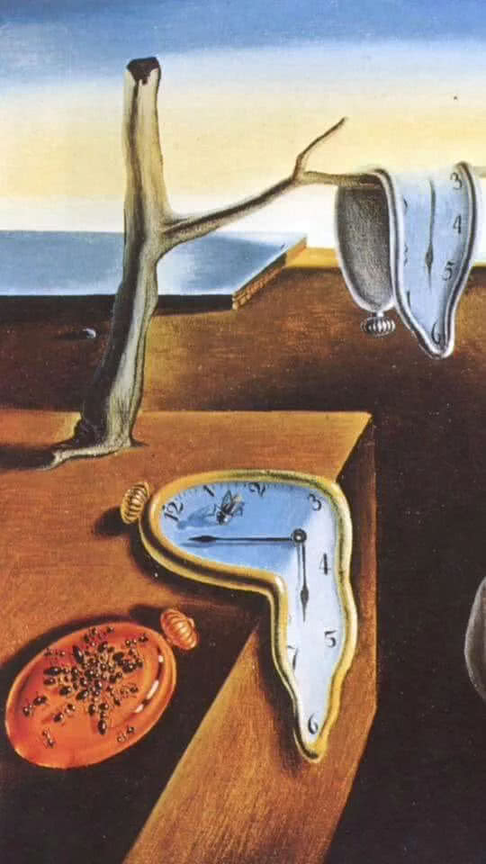

Никита Дубко, Яндекс.Поиск
Никита Дубко, Яндекс.Поиск
показывать через заданное пользователем время попап с напоминалкой, что время прошло.
const ms = await getTime();
setTimeout(showPopup, ms);git commit -m 'Who cares?'
git push
показывать через заданное пользователем время попап с напоминалкой, что время прошло.
показывать через заданное пользователем время попап с напоминалкой, что время прошло.
— время, равное 9 192 631 770 периодам излучения, соответствующего переходу между двумя сверхтонкими уровнями основного состояния атома цезия-133.
🇬🇧 When delay is larger than 2147483647 or less than 1, the delay will be set to 1. Non-integer delays are truncated to an integer.
🇷🇺 Когда задержка больше 2147483647 или меньше 1, значение задержки устанавливается в 1. Не-целые задержки обрезаются до целых.
void Shell::SetTimeout(const v8::FunctionCallbackInfo<v8::Value>& args) {
Isolate* isolate = args.GetIsolate();
args.GetReturnValue().Set(v8::Number::New(isolate, 0));
if (args.Length() == 0 || !args[0]->IsFunction()) return;
Local<Function> callback = args[0].As<Function>();
Local<Context> context = isolate->GetCurrentContext();
PerIsolateData::Get(isolate)->SetTimeout(callback, context);
}
void PerIsolateData::SetTimeout(Local<Function> callback,
Local<Context> context) {
set_timeout_callbacks_.emplace(isolate_, callback);
set_timeout_contexts_.emplace(isolate_, context);
}bool Shell::CompleteMessageLoop(Isolate* isolate) {
auto get_waiting_behaviour = [isolate]() {
base::MutexGuard guard(isolate_status_lock_.Pointer());
DCHECK_GT(isolate_status_.count(isolate), 0);
bool should_wait = (options.wait_for_background_tasks &&
isolate->HasPendingBackgroundTasks()) ||
isolate_status_[isolate] ||
isolate_running_streaming_tasks_[isolate] > 0;
return should_wait ? platform::MessageLoopBehavior::kWaitForWork
: platform::MessageLoopBehavior::kDoNotWait;
};
return ProcessMessages(isolate, get_waiting_behaviour);
}while (true) {
// кручу-верчу, таски выполнить хочу
// ...
bool ran_set_timeout = false;
if (!RunSetTimeoutCallback(isolate, &ran_set_timeout)) {
return false;
}
if (!ran_set_timeout) return true;
}
const { setTimeout } = require('timers/promises');
async function myPromise(delay) {
await setTimeout(delay);
return new Promise((resolve) => {
resolve({
data: `The data from ${delay} ms delay`,
});
});
}const currentDate = new Date();
const timestamp = currentDate.getTime();
// OR (IE9+)
const timestamp = Date.now();double JSDate::CurrentTimeValue(Isolate* isolate) {
if (FLAG_log_internal_timer_events) LOG(isolate, CurrentTimeEvent());
if (FLAG_correctness_fuzzer_suppressions) return 4.2;
// According to ECMA-262, section 15.9.1, page 117, the precision of
// the number in a Date object representing a particular instant in
// time is milliseconds. Therefore, we floor the result of getting
// the OS time.
return std::floor(V8::GetCurrentPlatform()->CurrentClockTimeMillis());
}double DefaultPlatform::CurrentClockTimeMillis() {
return base::OS::TimeCurrentMillis();
}
double OS::TimeCurrentMillis() {
return Time::Now().ToJsTime();
}
// WIN
Time Now() {
// …
// Determine current time and ticks.
TimeTicks ticks = GetSystemTicks();
Time time = GetSystemTime();
// …
}// POSIX
Time Time::Now() {
struct timeval tv;
int result = gettimeofday(&tv, nullptr);
DCHECK_EQ(0, result);
USE(result);
return FromTimeval(tv);
}
; gettimeofday
0x00000034f408c2d4 : mov $0xffffffffff600000,%rax
0x00000034f408c2db : callq *%raxentity D_FF is
PORT(
Input, Clk: in std_logic;
Output: out std_logic
);
end D_FF;
architecture behavioral of D_FF is
begin
process(Clk)
begin
if(Clk='1' and Clk'EVENT) then
Output <= Input;
end if;
end process;
end behavioral;
показывать через заданное пользователем время попап с напоминалкой, что время прошло.
const start = Date.now();
const timeout = 15000;
function check() {
const now = Date.now();
if (now - start > timeout) {
showPopup();
} else {
setTimeout(check, 1);
}
}
setTimeout(check, 1); function sleep(milliseconds) {
const date = Date.now();
let currentDate = null;
do {
currentDate = Date.now();
} while (currentDate - date < milliseconds);
}
sleep(15000);// worker.js
let time = Date.now();
const start = time;
while (true) {
if (Date.now() - start > 15000) {
postMessage('killme');
break;
}
}// main.js
function go() {
const worker = new Worker('/worker.js');
worker.onmessage = message => {
if (message.data === 'killme') {
worker.terminate();
}
};
}Network Time Protocol (NTP) daemon
Documents Home :: 4.1.0 :: ntpd.htm
void Shell::PerformanceNow(const v8::FunctionCallbackInfo<v8::Value>& args) {
if (i::FLAG_verify_predictable) {
args.GetReturnValue().Set(g_platform->MonotonicallyIncreasingTime());
} else {
base::TimeDelta delta =
base::TimeTicks::HighResolutionNow() - kInitialTicks;
args.GetReturnValue().Set(delta.InMillisecondsF());
}
}DEFINE_BOOL(verify_predictable, false,
"this mode is used for checking that V8 behaves predictably")
const base::TimeTicks Shell::kInitialTicks =
base::TimeTicks::HighResolutionNow();
TimeTicks TimeTicks::HighResolutionNow() {
return TimeTicks::Now();
}// We use timeGetTime() to implement TimeTicks::Now(). This can be problematic
// because it returns the number of milliseconds since Windows has started,
// which will roll over the 32-bit value every ~49 days. We try to track
// rollover ourselves, which works if TimeTicks::Now() is called at least every
// 48.8 days (not 49 days because only changes in the top 8 bits get noticed).The time, given in milliseconds, should be accurate to 5 µs (microseconds), with the fractional part of the number indicating fractions of a millisecond.
To offer protection against timing attacks and fingerprinting, the precision of time stamps might get rounded depending on browser settings. In Firefox, the privacy.reduceTimerPrecision preference is enabled by default and defaults to 20 µs in Firefox 59; in 60 it will be 2ms.
In Firefox, you can also enable privacy.resistFingerprinting, the precision will be 100ms or the value of privacy.resistFingerprinting.reduceTimerPrecision., whichever is larger.
microseconds
// reduced time precision (2ms) in Firefox 60
event.timeStamp
// 1519211809934
// 1519211810362
// 1519211811670
// ...
// reduced time precision with `privacy.resistFingerprinting`
event.timeStamp;
// 1519129853500
// 1519129858900
// 1519129864400
// ...The callback function is passed one single argument, a DOMHighResTimeStamp similar to the one returned by performance.now(), indicating the point in time when requestAnimationFrame() starts to execute callback functions.
FrameRequestCallbackCollection::CallbackId
FrameRequestCallbackCollection::RegisterFrameCallback(FrameCallback* callback) {
FrameRequestCallbackCollection::CallbackId id = ++next_callback_id_;
callback->SetIsCancelled(false);
callback->SetId(id);
frame_callbacks_.push_back(callback);
DEVTOOLS_TIMELINE_TRACE_EVENT_INSTANT("RequestAnimationFrame",
inspector_animation_frame_event::Data,
context_, id);
probe::AsyncTaskScheduledBreakable(context_, "requestAnimationFrame",
callback->async_task_id());
return id;
}
const timeout = 15000;
let start;
function check(timestamp) {
if (start === undefined) {
start = timestamp;
}
const elapsed = timestamp - start;
if (elapsed < timeout) {
window.requestAnimationFrame(check);
} else {
showPopup();
}
}
window.requestAnimationFrame(check);❓ Нужно точно?
✅ performance.now, requestAnimationFrame.
❓ Точность не важна?
✅ Date.now, setTimeout.
❓ Нужен контроль?
✅ Сервер
.animation.active {
animation-duration: 1s;
animation-name: some;
animation-iteration-count: 1000;
}
@keyframes some {
from { opacity: 0 }
to { opacity: 1 }
}const animation = document.querySelector('.animation');
let iterationCount = 0;
animation.addEventListener('animationstart', () => { });
animation.addEventListener('animationiteration', () => {
iterationCount++;
});
animation.addEventListener('animationend', () => { });
animation.classList.toggle('active');function ownSetTimeout(callback, duration) {
const div = document.createElement('div');
const keyframes = new KeyframeEffect(div, [], {
duration,
iterations: 1
});
const animation = new Animation(
keyframes,
document.timeline
);
animation.play();
animation.addEventListener('finish', () => {
callback();
});
}var video = document.createElement('video');
await video.play();
// wait …
console.log(video.currentTime);const audio = new Audio('path/to/sound');
if (typeof audio.loop == 'boolean') {
audio.loop = true;
} else {
myAudio.addEventListener('ended', function() {
this.currentTime = 0;
this.play();
}, false);
}
audio.play();let wakeLock = null;
const requestWakeLock = async () => {
try {
wakeLock = await navigator.wakeLock.request();
} catch (err) {
console.error(`${err.name}, ${err.message}`);
}
};
await requestWakeLock();
window.setTimeout(() => {
wakeLock.release();
wakeLock = null;
}, 5000);
const handleVisibilityChange = async () => {
if (wakeLock !== null &&
document.visibilityState === 'visible') {
await requestWakeLock();
}
};
document.addEventListener(
'visibilitychange',
handleVisibilityChange
);Currently `performance.now()` and related timestamps are coarsened based on site isolation status. This change will align their coarsening based on cross-origin isolation capability, regardless of platform. That would decrease their resolution on desktop from 5 microseconds to 100 microseconds in non-isolated contexts. It would also increase their resolution on Android from 100 microseconds to 5 microseconds in cross-origin isolated contexts, where it's safe to do so.
Intent to Ship: Align performance API timer resolution to cross-origin isolated capabilityconst timeStamp = Temporal.now.instant();
// Timestamp in Milliseconds
timeStamp.epochMilliseconds;const duration = Temporal.Duration.from({
hours: 130,
minutes: 20
});
duration.total({ unit: 'seconds' }); // => 469200